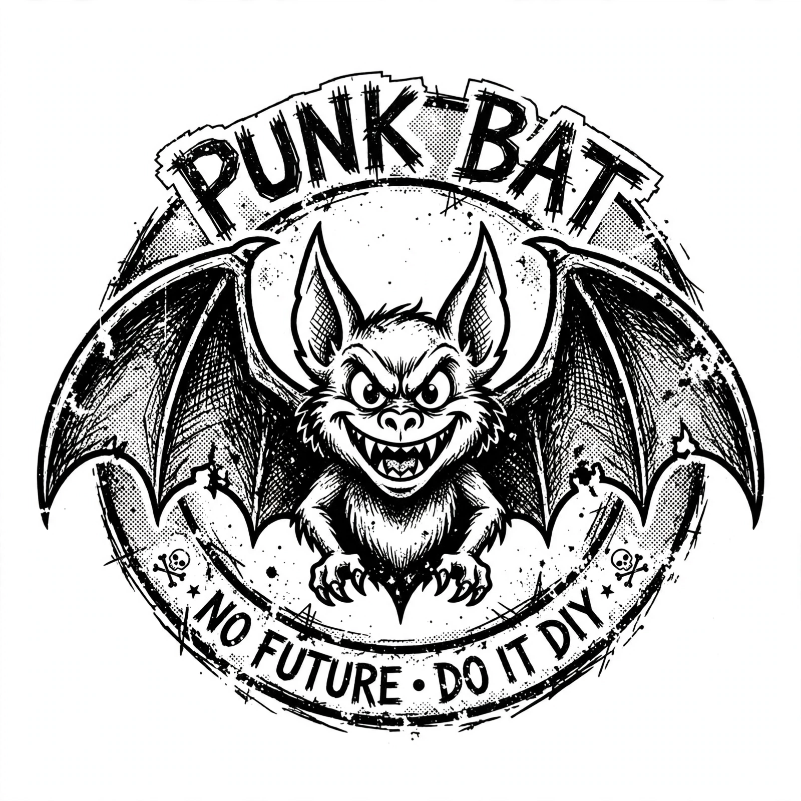

Alternative Tentacles
| Alternative Tentacles | |
|---|---|
 | |
| The label's bat logo | |
| Founded | June 1979 |
| Founder | Jello Biafra; East Bay Ray |
| Genre | Punk rock, hardcore punk, alternative rock, spoken word |
| Country of origin | United States |
| Location | Emeryville, California (formerly San Francisco) |
Alternative Tentacles is a record label established in June 1979 by members of the San Francisco punk band Dead Kennedys, principally singer Jello Biafra and guitarist East Bay Ray. The label was originally created to release the band's own recordings after difficulties with other labels, and its first release was the Dead Kennedys' debut single "California Über Alles" in 1979.
The label went on to become one of the most influential independent labels in American punk and underground music, releasing records by artists including Butthole Surfers, D.O.A., Nomeansno, Alice Donut, The Dicks, and many others, as well as an extensive catalogue of spoken-word albums by Biafra and other performers. Its distinctive logo — a bat drawn by artist Winston Smith, who also produced much of the Dead Kennedys' artwork — became an icon of the American hardcore scene.
Legal dispute
In 1998 the other members of the Dead Kennedys sued Biafra and Alternative Tentacles, alleging unpaid royalties and failure to promote the band's catalogue. A jury ruled against Biafra in 2000, and control of the Dead Kennedys' recordings was transferred away from Alternative Tentacles; the label continued operating with its remaining catalogue and new signings.